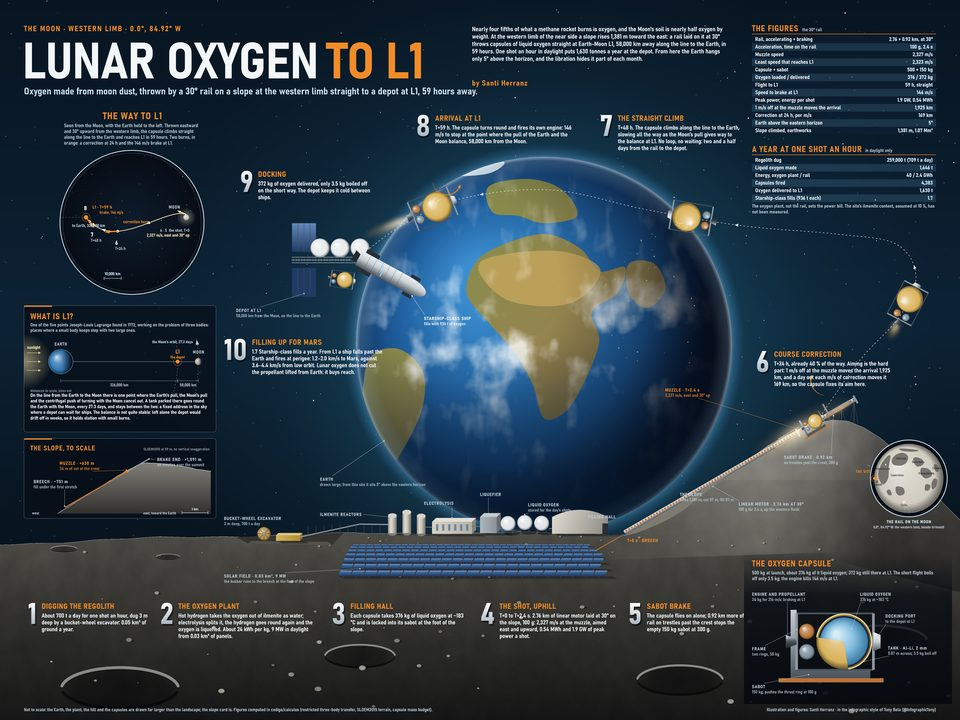
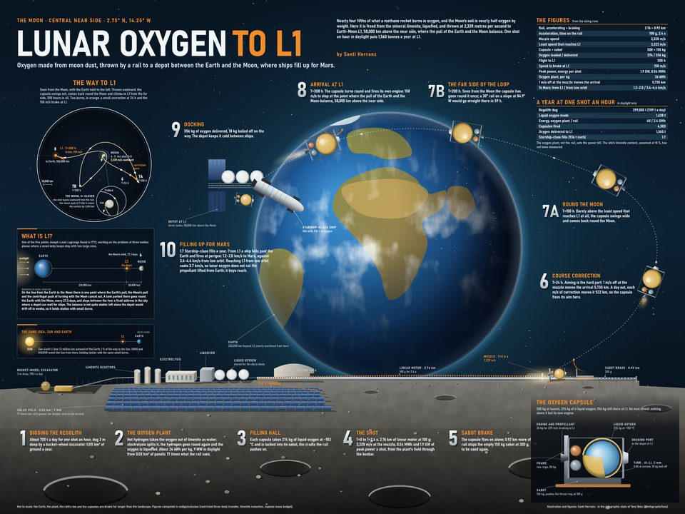
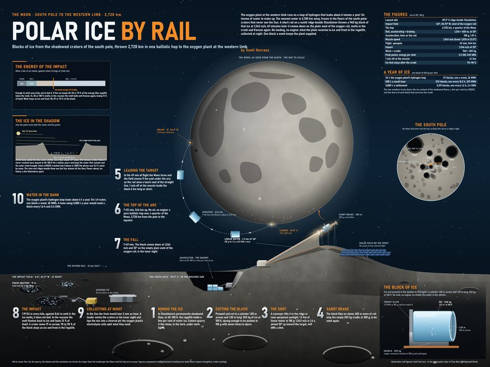

Santi Herranz · lunar-launchers
Lunar launchers
Rail launchers on the Moon. An electromagnetic rail runs on solar power and needs no propellant. With no air and an escape speed of only 2.38 km/s, a rail a few kilometres long can throw payloads into orbit or across the surface.
Here is one lunar supply chain, worked out with real trajectories: oxygen made from the regolith is fired to a depot at the Earth–Moon L1 point to refuel ships bound for Mars, and ice from the south pole is thrown to the oxygen plant. The code and calculations are on GitHub.
Play L1 Oxygen Run one button
Four pieces
-

A rail inclined 30° up a hillside at 84.92°W fires 500 kg capsules of liquid oxygen straight to the depot at L1.
2,327.3 m/s · 59 h · 372 kg delivered
-

The first design: a flat rail near the centre of the near side. Its capsules loop once around the Moon. This folder also holds the model both routes share.
2,328.2 m/s · 308 h · 356 kg delivered
-

A rail on a sunlit ridge near Shackleton throws blocks of ice on a 2,728 km arc. They come down beside the oxygen rail and supply its plant with water.
1,543 m/s · 49 min · 940 kg blocks
-
L1
Oxygen
Run
One button. Fire a capsule at the right speed and watch whether it reaches the depot, from the hillside rail or the flat one. The physics is the same three-body model as the calculations.
Window: about 9 m/s wide on either rail
Key numbers
| Direct route | Flat rail | Polar ice hop |
|---|
| Site | 0.0°, 84.92°W | 2.75°N 14.25°W | −89.5°, 0° → 0.0°, 84.92°W |
|---|
| Launch speed | 2,327.3 m/s | 2,328.2 m/s | 1,543 m/s |
|---|
| Rail | 2.76 km at 100 g, 30° up a slope | 2.76 km at 100 g, flat | 1.2 km at 100 g |
|---|
| Flight | 59 h, direct | 308 h, one loop | 49 min, ballistic |
|---|
| Payload | 372 kg of LOX | 356 kg of LOX | 940 kg of ice |
|---|
| Aim | 1,925 km per m/s | 5,730 km per m/s | 6.1 km per m/s |
|---|